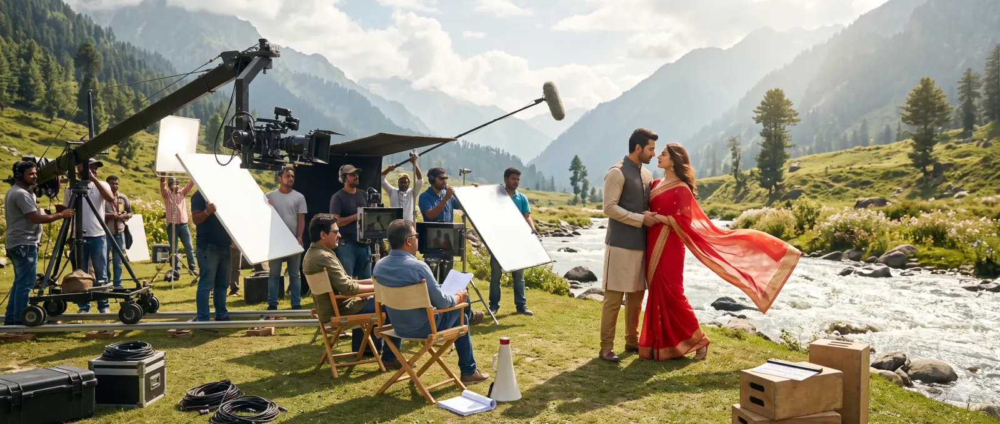
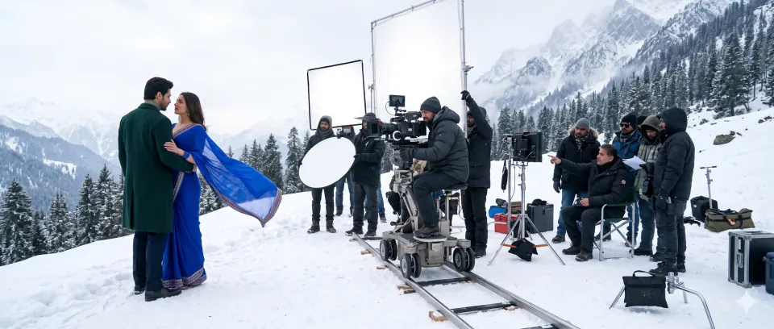
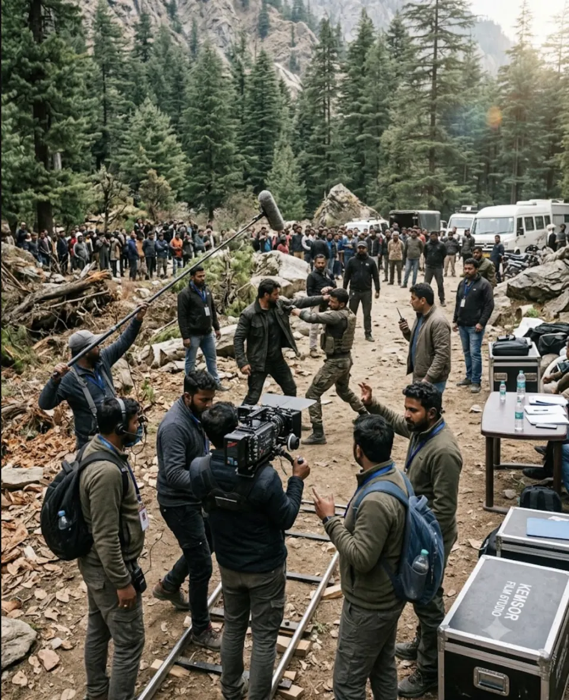

A location
and a plan.
For productions that need locations found and managed.
PRODUCE / LOCATIONS & LOGISTICS
03 — ON THE GROUNDLOCATIONS & LOGISTICS / KEMSOR STUDIOS
The right place, ready when the camera is. We scout, secure and manage locations — so every shoot day starts ready.
Explore location support
THE STORY GOES HERE.01 THE APPROACH
A location is a character in the story. Logistics decide whether you can actually film there.
We find places that serve the story, then plan everything it takes to work in them — access, movement, timing and the people who live and work nearby.
We treat the communities we film in as partners, and leave places as we found them. Every detail supports the story and the people making it.
Story first.
Logistics ready.
02 WHAT WE HANDLE
Six connected servicesOptions found and recced against the script, with photos and practical notes. The creative fit and the practical requirements belong in the same conversation.
Agreements with location owners and coordination on every shoot day.
Working with owners and relevant authorities on the permissions a shoot needs.
Transport, base and unit facilities planned around the schedule.
Movement between locations planned so shoot time isn’t lost on the road.
Neighbours informed, sites protected and locations returned as we found them.

03 THE PROCESS
One connected plan, from the first recce to the final handback.
What each location needs to say, and what each scene needs practically.
Options found, visited and assessed with the director and heads of department.
Agreements, permissions and logistics locked into the schedule.
Locations run on shoot days and handed back properly at wrap.

The right location doesn’t just look the part.
It works for the production.
04 WHO IT’S FOR
For productions that need locations found and managed.
For directors looking for the right world for the frame.
For international productions filming in India.
05 GOOD TO KNOW
Yes. Early scouting helps shape a budget and schedule grounded in production realities.
Yes. Our India Production Services cover locations and logistics for visiting productions.
Yes. We can take on agreements, permissions coordination and shoot-day management for locations you’ve chosen.